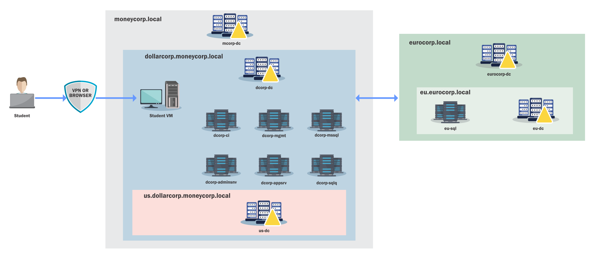
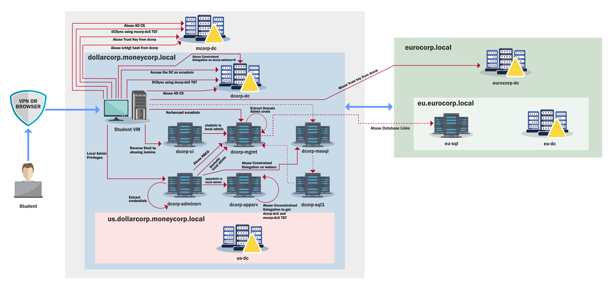

The learning path for CRTP is a complete walkthrough on attacking AD, from a simple valid user inside a domain to an Enterprise Admin.
Here is a detailed 30-day study plan for the CRTP exam, including estimated hours per day for study, specific lab videos, and chapters in the lab manual to watch/read each day.
This plan focuses on both theory and practical application, and it is designed to ensure a comprehensive approach.
PowerShell Overview
Microsoft's .NET is a free, cross-platform web services strategy designed to help administrators quickly build applications using multiple language editors and libraries. PowerShell, first released in November of 2006, is a command-line scripting language that was built on .NET to help administrators and power users rapidly automate some of the daily tasks required to manage the operating system. It has become the de facto standard for administering Windows environments and is now open source and installed by default on many Windows versions.
With that said, most of us also know that the bad guys have been pretty successful at taking advantage of this easy-to-use scripting language, including using it to install malicious payloads. Some of the reasons include:
- PowerShell now comes pre-installed on Windows machines.
- It provides an easy method for executing arbitrary payloads directly from memory, enabling fileless malware techniques.
- It is easy to obfuscate to evade signature-based defenses.
- PowerShell is a trusted administrative tool and is often not heavily restricted.
- Many offensive scripts and frameworks are freely available such as PowerShellEmpire and PowerSploit.
Because of these advantages, cyber adversaries have been very successful in abusing PowerShell over the years. Fortunately, newer versions include improved logging and defensive controls.
PowerShell Detections
System-wide transcription
When System-wide transcription is enabled, all activity for every PowerShell host (powershell.exe, powershell_ise.exe, System.Management.Automation.dll or other custom host) is logged to a specified directory or to the user's "My Documents" directory if none is defined. When logs are forwarded and correlated properly this can be extremely effective for detecting PowerShell abuse.
Script Block logging
Script Block logging allows defenders to see exactly what a script attempted to execute. Before this feature existed much of this activity was invisible.
PowerShell v5.1 supports two modes:
Warning level auto logging which records suspicious script blocks as Event ID 4104 (Warning) in Microsoft-Windows-PowerShell/Operational.
Verbose logging which can be enabled through Group Policy and records full script execution as Event ID 4104 (Verbose).
AntiMalware Scan Interface (AMSI)
AMSI sends the contents of scripts or script blocks to the registered antivirus engine before execution. This allows security products to inspect scripts regardless of whether they originate from disk, memory, manual input, or encoded payloads.
Constrained Language Mode (CLM)
CLM restricts access to advanced .NET scripting features, Win32 API invocation through Add-Type, and interaction with COM objects.
When Applocker or WDAC is enforced in Allow mode, PowerShell automatically operates in Constrained Language Mode which significantly reduces attack surface.